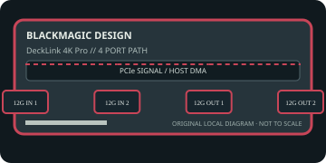

[ INDIVIDUAL COMPONENT // EXPANSION CARDS ]
Blackmagic Design DeckLink 4K Pro
PCIe x8 SDI board with independent capture and playback connections for DCI/UHD workflows. This static reference distinguishes documented card I/O from host software, codecs, and external signal paths.

IDENTIFICATION: Match the exact SKU, model marking, part number, board revision, bracket and connector layout to manufacturer documentation. Similar family names do not imply interchangeable ports, firmware or support.
Capture, playback and compatibility specifications
| Exact model / SKU | DeckLink 4K Pro — verify the marking and revision on the physical card. |
|---|---|
| PCI/PCIe bus and lanes | PCI Express 2.0 x8; provide eight electrically connected lanes for full operation. A physically x16 slot can host it if platform wiring and bandwidth are suitable. |
| Digital video inputs | Two 12G-SDI BNC inputs and two 12G-SDI BNC outputs provide capture and playback paths; reference/sync is available for supported broadcast workflows. |
| Analog ports | No analog picture I/O. SDI reference/sync is a timing input, not a composite/component video connection. |
| Input formats | SD, HD, 2K, Ultra HD and 4K DCI formats; manufacturer format tables list 4K DCI through 4096×2160 at supported high frame rates. Exact simultaneous channel/link modes depend on raster, frame rate and pixel sampling. |
| Output formats and connectors | Two 12G-SDI outputs support SD/HD/2K/UHD/4K playback formats within the official link and timing table; no HDMI or analog output on this model. |
| Encoding and driver model | The card transports uncompressed SDI frames and embedded audio; it is not a compressed-file encoder. Host applications perform file encoding and storage. |
| Operating-system compatibility | Requires Blackmagic Desktop Video. The vendor publishes macOS, Windows and Linux installers, but supported OS versions and apps change by Desktop Video release; verify the current matrix for this legacy PCIe 2.0 card. |
| Software | Desktop Video Utility, Media Express and compatible editing/broadcast software or DeckLink SDK applications. |
| Power and cooling | Use the card-specific slot/auxiliary-power requirements printed in its manual and on the board; reserve cooling and PCIe power capacity for sustained high-bandwidth work. The linked tech page does not establish one maximum draw for every board revision. |
| Firmware caveat | Firmware management is coupled to the vendor Desktop Video stack. Confirm the release supports this exact model and host OS, and avoid interruption during firmware initialization or update. |
Integration notes and limitations
- Two input and two output SDI connectors do not guarantee every channel can carry the maximum format simultaneously. Verify 12G link mapping, reference, cabling, host lanes and sustained storage bandwidth.
- Verify physical slot fit, PCIe lane wiring, BIOS/UEFI enumeration, host bandwidth and driver support together; a longer slot does not guarantee the electrical width the card needs.
- Record the board revision, firmware/driver versions, OS build, application, signal standard, source timing and tested pixel format as part of commissioning.
- Distinguish a video transport/pixel format from a compressed file codec. Unless the manufacturer explicitly states hardware encoding, codec creation and recording are host-application tasks.
Manufacturer sources and support
- Blackmagic Design — DeckLink 4K Pro technical specificationsManufacturer source; consult the exact model/revision and software-release notes before installation.
- Blackmagic Design — Desktop Video downloads, manuals and release notesManufacturer source; consult the exact model/revision and software-release notes before installation.
Product revisions, driver support and application integrations change over time; manufacturer documentation for the exact card takes precedence over generic family-level guidance.